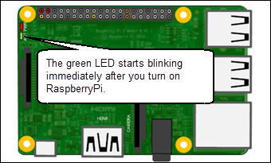
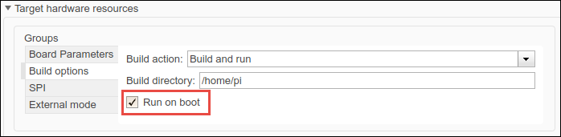
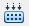

If you deploy a Simulink® model on Raspberry Pi™, the model does not start running automatically after the Raspberry Pi is switched on. You must manually start the model by establishing a Secure Shell (SSH) connection with Raspberry Pi through Wi-Fi® or Ethernet.
With the Run-on-boot feature, you no longer need to manually start the model. The model runs immediately after the Raspberry Pi is switched on.
The Simulink model Blink Green LED lights a green LED on Raspberry Pi. Open the model in Simulink editor and deploy it on Raspberry Pi. After the model is deployed successfully, the green LED starts blinking. Now, restart Raspberry Pi and wait for a few seconds. The green LED does not start blinking because the model on the hardware is not running.
Now, add your model to Run-on-boot as described in Add the Model to Run-on-Boot and restart Raspberry Pi. The green LED starts blinking immediately after the restart.

You can add or remove a Simulink model from Run-on-boot using the Model Configuration Parameters dialog box or Simulink functions:
Open the Simulink model.
In the Simulink editor, select Simulation > Model Configuration Parameters.
In the Configuration Parameters dialog box, select Hardware Implementation.
Set the Hardware board parameter to
Raspberry Pi. This selection
automatically populates the parameters in the Hardware board settings
with the default values for the Raspberry Pi hardware.
From the Groups list under Target hardware resources, select Build options > Run on boot.

Click OK to save your changes. Click Apply.
To deploy the code on the hardware, in the model window, click Deploy to Hardware . The lower left corner of the model window displays status while Simulink prepares, downloads, and runs the model on the hardware.
Restart the hardware. The model automatically starts running after the restart.
You can manage the Run-on-boot feature programmatically using:
addToRunOnBoot
getRunOnBoot
removeRunOnBoot
You can add only one model to Run-on-boot. The most recently added model overwrites the existing model in Run-on-boot.
Run-on-boot does not work when the model is running in External mode or Processor-In-The-Loop (PIL).